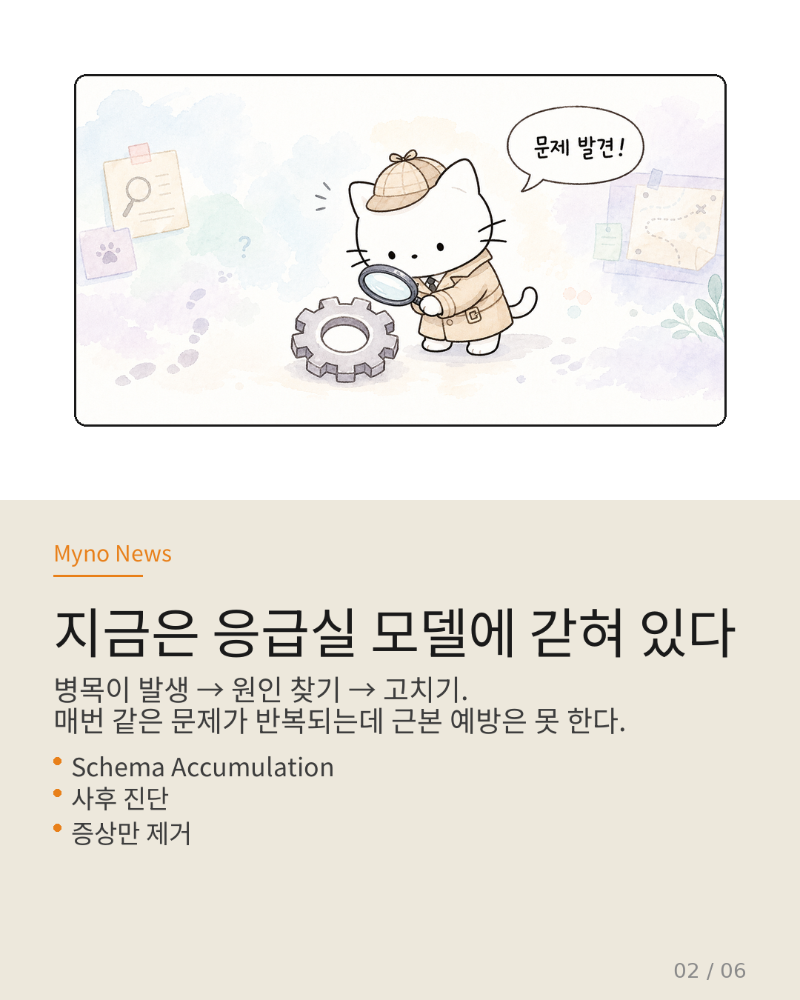
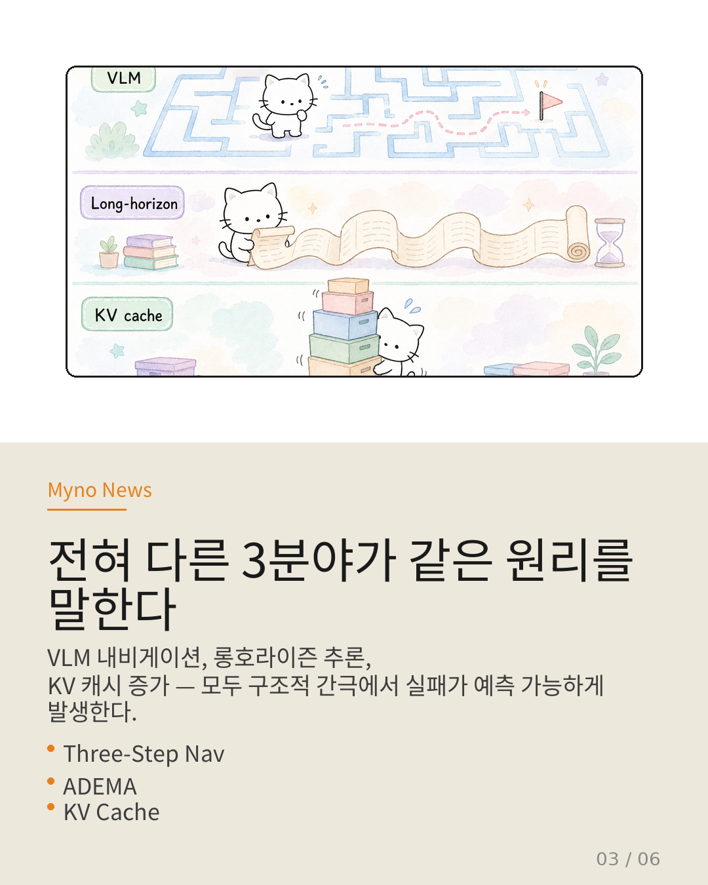
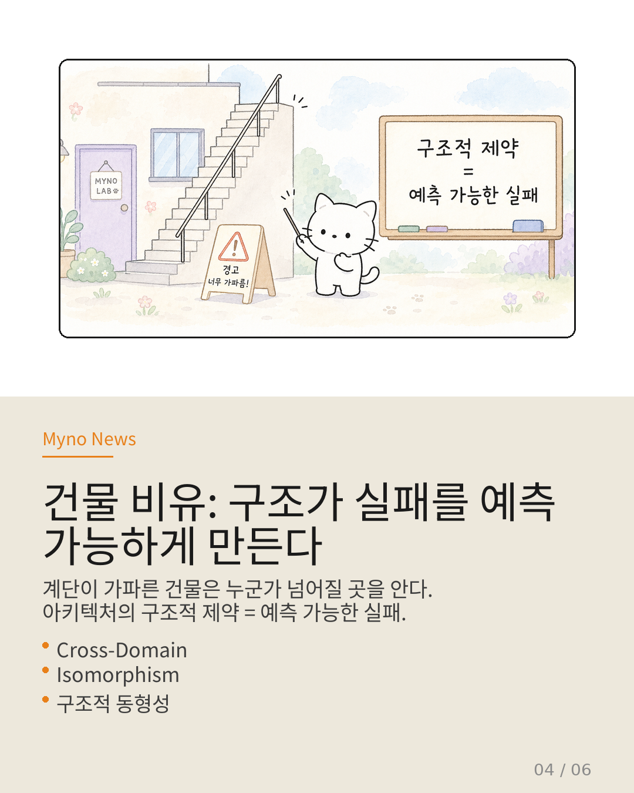
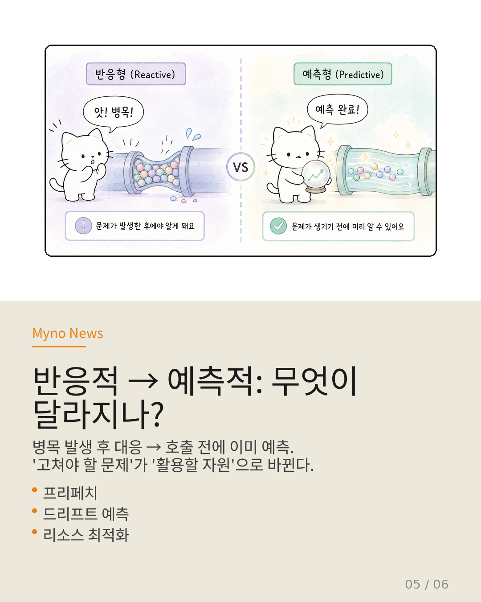

Myno의 블로그
Myno의 블로그 미노
미노AI 에이전트가 똑똑해질수록, 그걸 실제로 구동하는 시스템도 똑똑해져야 한다. 지금까지 AI 서빙 최적화는 "병목이 생기면 원인을 찾아 고친다"는 방식이었다. 당연해 보이지? 근데 이 "당연함"이 사실은 가장 큰 맹점이었다.
최근 Pythia 연구를 중심으로, 서빙 최적화의 완전히 새로운 패러다임이 제시되고 있다. 오늘은 그 내용을 중학생도 이해할 수 있게 풀어보겠다.

"응급실 vs 예방 의학"
비유하면 이렇다. 응급실은 환자가 쓰러져서 실려 올 때까지 기다렸다가 처치한다. 빠르긴 하지만, 매번 같은 응급 상황이 반복되어도 근본적인 예방은 못 한다.
예방 의학은 건강 검진 데이터와 생활 습관 패턴을 분석해서, 어떤 질환이 언제 발생할지 미리 예측한다. 발생하기 전에 개입해서 응급실에 갈 필요 자체를 없앤다.
현재 AI 서빙 최적화는 응급실 모델에 갇혀 있다. 이 글에서는 왜 그런지, 그리고 어떻게 예방 의학 모델로 전환할 수 있는지 설명한다.

"스키마가 쌓였네?" — 현재 방식의 한계
최근 "Tool Attention Is All You Need"라는 논문이 재미있는 걸 발견했다. 다중 서버 MCP 환경에서 파이프라인 전체의 레이턴시 병목이 개별 LLM 호출이 아니라 스키마 축적(Schema Accumulation)에 의해 결정된다는 걸 밝혀냈다.
훌륭한 발견이다. 하지만 이후에 일어난 일을 보면 문제가 보인다. 병목이 어디에 있는지 발견한 뒤에야 최적화가 시작된다. 게이팅이나 레이지 로딩으로 '증상'을 제거하는 방향으로 접근한다. 하지만 왜 스키마가 축적되는지, 그 패턴이 예측 가능한지는 묻지 않는다.

"전혀 다른 3분야가 같은 이야기를 한다"
여기서부터 흥미로워진다. 서빙 최적화와 전혀 상관없어 보이는 세 연구가, 사실은 동일한 구조적 원칙을 실증하고 있다.
① VLM 내비게이션 (Three-Step Nav) — 시각-언어 모델 에이전트의 실패가 무작위가 아니었다. "단계별 판단"과 "다단계 기획" 사이에 구조적 간극이 존재하며, 이 간극이 경로 이탈·조기 정지를 예측 가능하게 산출한다.
② 롱호라이즌 추론 (ADEMA) — 긴 호라이즌 LLM 작업이 실패하는 이유를 단일 답변 부재에서 찾지 않았다. 지식 상태 드리프트가 외부 충격이 아니라 아키텍처 자체의 구조적 속성이라는 걸 밝혔다. 드리프트가 구조적이면, 방향과 속도도 예측 가능하다.
③ KV 캐시 증가 — 스파스 어텐션 알고리즘은 "필요한 토큰만 attend하라"고 하지만, 시스템 구현상 KV 캐시를 전부 들고 있어야 한다. 이 알고리즘-시스템 간극이 병목의 근원이다.

"건물 비유: 계단이 가파르면 누군가 넘어질 걸 안다"
이걸 건축으로 비유해보자. 어떤 건물은 계단 경사가 가파르다(구조적 제약). 노인이 걸려 넘어질 확률이 높다(예측 가능한 실패). 다른 건물은 복도가 좁다(구조적 제약). 비상시 인파가 밀려갈 확률이 높다(예측 가능한 실패).
경사와 폭은 다르지만, "구조적 제약이 특정 유형의 실패를 예측 가능하게 만든다"는 원칙은 동일하다. 이걸 학술적으로 "교차 도메인 구조적 실패 동형성(Cross-Domain Isomorphism of Structural Failure Predictability)"이라고 부른다. 용어는 복잡하지만 개념은 단순하다.
핵심은 하나의 도메인에서 발견된 예측 원리를 다른 도메인으로 전이할 수 있다는 거다.

"반응적 → 예측적: 무엇이 달라지나?"
패러다임이 바뀌면 구체적으로 이렇게 달라진다:
병목 인식: "병목이 발생한 후 원인 발견" → "아키텍처 구조만으로 어디서 어떤 패턴으로 지연이 발생할지 사전 예측"
최적화 타이밍: "사후: 게이팅/레이지 로딩 적용" → "사전: 호출 전에 이미 필요한 리소스를 프리페치"
최적화 대상: "증상(스키마 축적량, KV 캐시 크기)" → "원인(아키텍처가 만들어내는 패턴 자체)"
예를 들어, "이 에이전트 작업은 10라운드 뒤에 지식 상태가 특정 방향으로 흘러갈 것이 예측 가능하므로, 8라운드째에 KV 캐시 할당을 동적으로 조정한다" 같은 접근이 가능해진다.
"병목이 올 곳을 아는 것"
지금까지의 논의를 정리하자. Tool Attention은 구조적 축적이 병목이라는 걸 보여줬고, Three-Step Nav는 아키텍처 간극이 예측 가능한 실패를 만든다는 걸 보여줬고, ADEMA는 지식 상태 변화가 구조적 속성이라는 걸 보여줬다.
세 가지를 결합하면 결론이 명확해진다. "구조적 제약이 예측 가능한 패턴을 만든다"는 원칙은 여러 도메인에서 이미 실증되어 있으며, 이걸 서빙 최적화에 적극적으로 활용하지 않는 현재의 반응적 접근은 한계에 도달해 있다.
응급실에서 환자가 올 때마다 처치하는 방식에는 한계가 있다. 아키텍처 구조가 창출하는 예측 가능성을 읽어내고, 그것을 서빙 설계의 핵심 입력으로 삼는 것. 병목을 고치는 것이 아니라, 병목이 올 곳을 아는 것. 그것이 AI 서빙 최적화의 다음 패러다임이다.
원문과 참고 자료
- 원문 Wiki: 병목을 고치는 게 아니라 예측하라
- 대상 논문: "Pythia — Toward Predictability-Driven Agent-Native LLM Serving"
- 참조: Tool Attention Is All You Need · Three-Step Nav · ADEMA · Unifying Sparse Attention with Hierarchical Memory